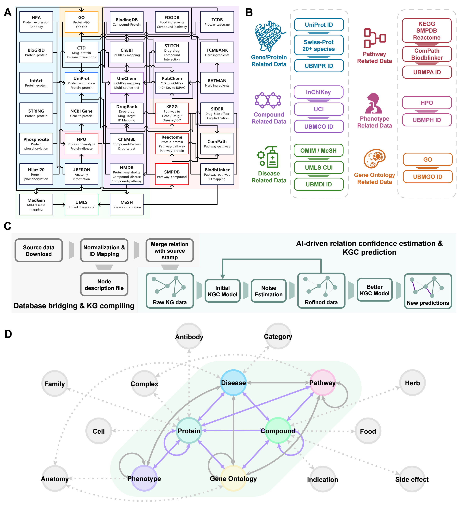
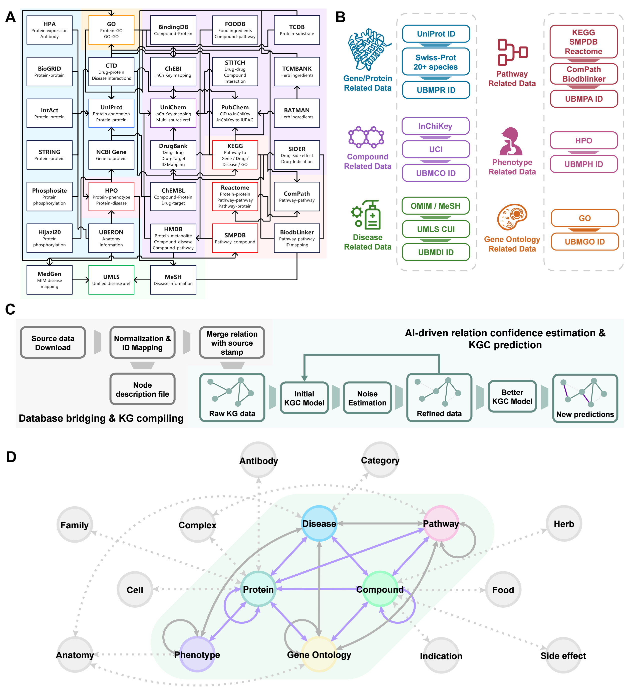

Research Content and Significance
研究内容与意义
The central tension in drug discovery lies in bridging two complementary requirements. On the one hand, we must
accurately characterize, at the molecular-structure level, which local substructures determine bioactivity and
interactions, so as to support lead optimization and experimentally testable mechanistic hypotheses. On the other hand,
at the systems level, diverse evidence—spanning drugs, proteins, pathways, phenotypes, and diseases—must be organized
into a computable whole to explain polypharmacology and pathway-level effects and to form a traceable chain of
evidence. Although substantial progress has been made on both ends, key usability bottlenecks remain: structural models
often “predict well but are hard to interpret and transfer,” while system-level data foundations often “aggregate
broadly but lack calibrated confidence and reasoning capability.” This limits closed-loop studies that connect molecules
to mechanisms. Moreover, building end-to-end drug-discovery prediction that links global systems signals with local
structural determinants at both the data and model levels remains an urgent challenge.
Structural biology perspective. Graph neural networks (GNNs) have become a mainstay for predicting
small-molecule properties and interactions and show strong representation-learning ability across tasks. However, the
signal-smoothing behavior of classic GNNs makes it difficult to derive explicit structural explanations that can guide
rational modifications. Under scarce labels and distribution bias (“cold start”), such models often generalize poorly.
Recent substructure-masking explanations emphasize chemically meaningful units that better align with human intuition,
highlighting a pressing challenge: how molecular representation models can adaptively and hierarchically decompose
functional substructures, and how to fuse local and global information across scales to enable fragment-level
explanations. Meanwhile, self-supervised pretraining has emerged as a major direction to improve transfer and
generalization, yet most approaches focus on learning stronger representations and still lack a unified solution for
explicitly projecting representations onto actionable, optimizable fragments. Work on interaction prediction further
suggests that explicitly learning local interactions and mitigating out-of-distribution shifts can substantially improve
generalization to new targets and new compounds.
Systems biology perspective. Biomedical knowledge graphs (KGs) provide a unified representation of
heterogeneous evidence and a computable foundation for drug repurposing, target discovery, and mechanistic inference,
reflecting a growing trend toward multi-scale evidence integration. However, the “scale–quality” trade-off is
particularly acute: identifiers and ontological semantics are highly heterogeneous across sources; evidence strength for
relations varies widely; and missingness is pervasive. In addition, many KG-based relation prediction models rely on
negative sampling, but in biomedicine “unobserved ≠ negative.” Many edges naturally follow a Positive–Unlabeled (PU)
setting, which can distort confidence estimates and hinder quantitative decision-making in downstream prioritization.
To make KGs truly actionable for experimental ranking, data quality and uncertainty modeling must be central, and
confident learning offers essential methodology for estimating reliability from noisy or incomplete labels.
Project focus and significance. Motivated by these bottlenecks, this project targets two complementary
goals. (1) To address limited fragment-level interpretability and insufficient cross-scale structural fusion, we propose
MolUNet++, which performs hierarchical substructure extraction via edge-contraction pooling and introduces a Nested
U-Net architecture to jointly learn local functional groups, mid-scale fragments, and global scaffolds within a unified
framework. Combined with substructure-masking explanation, the model maps decisions to actionable fragment
contributions, improving practical utility and providing testable structural evidence for interaction and property
prediction. (2) To address fragmented systems knowledge, PU incompleteness, and uncontrolled confidence, we build
UniBioMap by normalizing entities and aligning ontologies across more than 30 resources to produce a high-coverage
curated relation set. We further calibrate edge reliability using confident learning and robust PU-learning principles,
and then perform graph completion on a cleaned foundation to output large-scale, high-confidence predicted relations and
interactive retrieval services. Together, these efforts complement “interpretable structural signals” and “trusted
systems evidence,” laying a solid foundation for cross-scale evidence co-modeling and mechanism-oriented candidate
discovery.
药物发现的核心矛盾在于：一方面需要在分子结构层面准确刻画“哪些局部结构决定活性/互作”，以支撑先导化合物优化与可验证的机理假设；
另一方面需要在系统层面将药物、蛋白、通路、表型与疾病等多源证据组织为可计算的整体，以解释多靶点、多通路作用并形成可追溯的证据链。
当前研究在两端均取得显著进展，但在可用性上仍存在关键瓶颈：结构侧的模型往往“能预测但难解释、难迁移”，系统侧的数据底座则“能汇聚但难置信、难推理”，
从而限制了从分子到机制的闭环研究；此外，在数据与模型层面串联两条路线、实现全局—局部协同的药物发现预测仍是亟待解决的问题。
结构生物学层面。 图神经网络（GNN）已成为小分子性质与互作预测的重要主干方法，并在多任务上展现出较强的表示学习能力。
然而，经典 GNN 的信号平滑特性难以给出可直接指导结构修饰的显式解释；在标注稀缺与分布偏倚的“冷启动”场景下，模型也往往难以良好泛化。
近年来的子结构遮蔽解释强调使用更符合化学直觉的分割单元，进一步凸显了关键挑战：模型如何自适应地分层拆分功能结构、并跨尺度融合局部与全局信息，
从而为片段级解释提供基础。与此同时，自监督预训练被广泛用于提升迁移与泛化，但多数工作仍偏重“学到更强表征”，对“将表征显式投影到可优化片段”缺乏统一解决；
互作预测研究也表明，若能显式学习局部相互作用并缓解分布外偏移，可显著提升对新靶点/新化合物的泛化能力。
系统生物学层面。 生物医学知识图谱（KG）通过统一表达异构证据，为药物再定位、靶点发现与机制推断提供可计算的数据基础，
体现了多尺度证据整合的趋势。但 KG 的“规模—质量”矛盾尤为突出：多源数据在标识符与本体语义上高度异质，关系证据强弱不一且缺失普遍存在。
此外，许多基于 KG 的关系预测方法依赖负采样假设，但生物医学场景中“未观测≠为负”，大量边天然呈现正—未标注（PU）结构，
容易导致置信度失真并使下游筛选难以定量决策。要让 KG 真正服务实验优先级排序，必须将数据质量与不确定性建模纳入核心流程；
置信学习为从噪声/不完备标签中估计可靠性提供了关键方法学支撑。
选题内容与意义。 基于上述瓶颈，本项目聚焦两项互补目标：
（1）针对“片段级可解释与跨尺度结构融合不足”，提出 MolUNet++，以边收缩池化实现层级子结构抽取，并引入 Nested-UNet 结构，
使局部官能团、中尺度片段与整体骨架在统一框架内协同学习；结合子结构遮蔽解释，将模型决策映射为可操作的片段贡献，
提升预测可用性并为互作与性质任务提供可检验的结构证据。
（2）针对“系统知识碎片化、PU 标签不完备与置信度不可控”，构建 UniBioMap，完成跨 30 余资源的实体规范化与本体对齐，
形成高覆盖的整理关系集合；进一步引入置信学习与鲁棒 PU 学习思想校准边可靠性，在净化数据底座上开展图补全，
输出大规模高置信预测关系与可交互检索服务。两项工作分别补齐“可解释结构信号”与“可置信系统证据”，
为后续跨尺度证据协同建模与面向机制的候选发现奠定坚实基础。
Figures
图片
 
